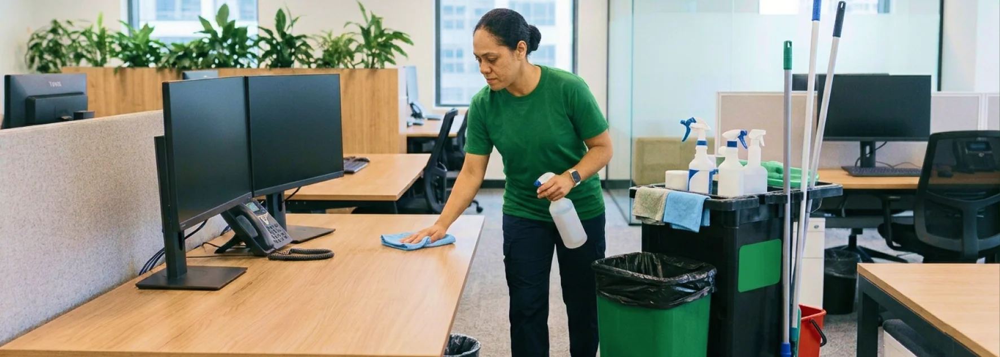

- Le coût d'un employé dépasse son salaire : charges patronales, assurances, vacances, absences
- En interne, une absence laisse les locaux sans nettoyage, ou oblige à improviser
- Un prestataire facture tout en une fois : salaire, charges, produits, matériel, remplacement
- L'interne reste pertinent pour de très petits locaux ou un besoin très ponctuel
- Le bon calcul compare les coûts complets, pas le salaire contre la facture
- Tester avant de s'engager réduit le risque d'un mauvais choix
Les deux options en bref
| Nettoyage interne | Nettoyage externalisé | |
|---|---|---|
| Principe | Vous employez la personne qui nettoie | Un prestataire envoie son équipe |
| Vous gérez | Contrat, salaire, assurances, remplacement, matériel | Le contrat de prestation et le suivi qualité |
| Facture | Salaire et charges, plus les frais annexes | Une facture unique |
| Souplesse | Limitée par le contrat de travail | Fréquence adaptable selon le contrat |
Combien coûte vraiment un nettoyeur en interne
Le salaire inscrit sur le contrat n'est qu'une partie du coût. En Suisse, l'employeur paie en plus des charges sociales obligatoires :
- AVS/AI/APG et assurance-chômage : ces cotisations totalisent 12,8 % du salaire, réparties à parts égales. La part de l'employeur est donc de 6,4 %
- Assurance-accidents professionnels : à la charge de l'employeur, avec un taux qui varie selon la branche
- Prévoyance professionnelle (LPP) : l'employeur en paie au moins la moitié
- Allocations familiales : cotisation patronale, avec un taux qui varie selon le canton
Un exemple fictif pour fixer les idées : sur un salaire brut de 2'500 CHF par mois, la seule part patronale AVS/AI/APG et chômage représente 160 CHF par mois. Il faut encore ajouter l'assurance-accidents, la prévoyance et les allocations.
Les coûts que l'on oublie
| Poste | Ce que ça représente pour vous |
|---|---|
| Vacances et jours fériés payés | Des jours où les locaux ne sont pas nettoyés, sauf à trouver un remplaçant |
| Absences (maladie, accident) | Même chose, sans préavis |
| Produits et matériel | Achat, renouvellement, stockage |
| Formation | Méthode, produits, sécurité (manipulation des produits, protection) |
| Gestion administrative | Fiches de paie, décomptes aux assurances, contrats |
| Responsabilité | Dommage à un tiers, accident du travail |
| Qualité | Contrôle et remplacement si le résultat ne convient pas |
Le tarif d'un prestataire (35 à 60 CHF de l'heure sur le marché suisse romand) semble élevé comparé au salaire horaire. Il englobe pourtant les charges, le remplacement, les produits, le matériel, l'assurance et l'encadrement.
Pour les fourchettes de prix détaillées, consultez notre guide Prix du nettoyage de bureaux en Suisse.

Ce que couvre l'externalisation
| Poste | Interne | Externalisé |
|---|---|---|
| Salaire et charges | À votre charge | Inclus dans le tarif |
| Remplacement en cas d'absence | À organiser | À prévoir dans le contrat |
| Produits et matériel | À acheter | Fournis |
| Formation | À organiser | Gérée par le prestataire |
| Gestion administrative | À votre charge | Facture unique |
| Assurance responsabilité civile | À votre charge | RC professionnelle du prestataire |
| Adaptation de la fréquence | Contrat de travail à modifier | Selon les conditions du contrat |
Quand l'interne reste le bon choix
Externaliser n'est pas toujours la meilleure réponse. L'interne se justifie dans plusieurs cas :
- Très petits locaux, avec un besoin de quelques heures par semaine, qu'un employé déjà présent peut assurer
- Besoin très occasionnel, qui ne justifie pas un contrat
- Salarié déjà en place qui nettoie dans le cadre d'un poste plus large (accueil, entretien général)
- Exigences particulières sur le moment de passage, difficiles à cadrer dans un contrat
Une formule mixte fonctionne souvent bien : l'interne pour l'entretien léger du quotidien, un prestataire pour les gros postes (sols, vitres, désinfection des sanitaires).
Comment passer à l'externalisation sans risque
- Lister les prestations attendues et la fréquence souhaitée
- Demander au moins deux devis comparables sur les mêmes prestations
- Vérifier le numéro IDE et l'assurance RC professionnelle du prestataire
- Préciser les zones à désinfecter (sanitaires, poignées, cuisine)
- Définir les horaires d'intervention (avant l'ouverture ou après la fermeture)
- Prévoir une période test ou des conditions de résiliation claires
- Désigner un interlocuteur côté entreprise pour le suivi
Pour le détail de ce que comprend une prestation, consultez notre guide du nettoyage de bureaux.
Les questions à poser au prestataire
- Qui intervient chez moi : la même équipe à chaque passage ?
- Que se passe-t-il en cas d'absence ?
- Le matériel et les produits sont-ils inclus ?
- Quelle est la durée d'engagement et comment résilier ?
- Comment le résultat est-il contrôlé ?
- L'entreprise est-elle assurée, et peut-elle le prouver ?
Si vous gérez aussi un immeuble ou une copropriété, voyez notre guide Conciergerie d'immeuble et PPE.
FAQ – Externaliser ou internaliser le nettoyage de bureaux
L'externalisation coûte-t-elle plus cher qu'un employé interne ?
Pas forcément. Comparé au seul salaire, le tarif d'un prestataire paraît plus élevé. Comparé au coût complet (charges, remplacement, matériel, gestion), l'écart se réduit, parfois il disparaît. Faites le calcul poste par poste.
Peut-on externaliser seulement une partie du nettoyage ?
Oui. Beaucoup d'entreprises gardent l'entretien léger en interne et confient au prestataire les sols, les vitres ou la désinfection des sanitaires. La formule se règle selon vos besoins.
Que se passe-t-il si la personne qui nettoie est absente ?
En interne, l'absence n'est souvent pas remplacée. Avec un prestataire, le remplacement doit être prévu dans le contrat : demandez-le explicitement.
Faut-il s'engager sur une longue durée avec un prestataire ?
Pas obligatoirement. Beaucoup de contrats réguliers courent sur 12 mois, mais les conditions se discutent, et une période test est parfois possible. Vérifiez toujours les conditions de résiliation avant de signer.
Les employés d'un prestataire sont-ils protégés par une convention collective ?
Oui, en principe. En Suisse romande, une convention collective du secteur du nettoyage s'applique aux entreprises de nettoyage et fixe des salaires minimaux. Un tarif très bas doit donc vous interroger.
En résumé
Le choix entre nettoyage interne et externalisé ne se joue pas sur le salaire contre la facture, mais sur le coût complet, la continuité du service et le temps de gestion. L'interne reste pertinent pour de très petits locaux ou un besoin ponctuel. Pour des bureaux de taille moyenne, l'externalisation apporte la continuité, le remplacement et une gestion simplifiée. Dans tous les cas, comparez, demandez des devis détaillés et testez.